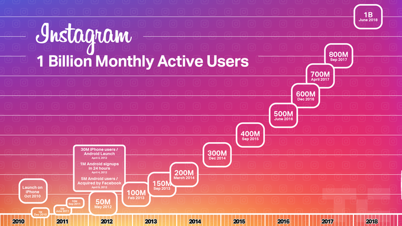

Regramming would be a fundamental shift in how Instagram works, not necessarily in terms of functionality, but in terms of the accepted norms of what and how to post. You could always screenshot, cite the original creator, and post. But Instagram has always been about sharing your window to the world — what you’ve lived and seen. Regramming would legitimize suddenly assuming someone else’s eyes. The result would be that users couldn’t trust that when they follow someone, that’s whose vision would appear in their feed. Instagram would feel a lot more random and unpredictable. And it’d become more like its big brother Facebook whose News Feed has waned in popularity – susceptible to viral clickbait bullshit, vulnerable to foreign misinformation campaigns, and worst of all, impersonal.
Newton’s report suggested Instagram reposts would appear under the profile picture of the original sharer, and regrams could be regrammed once more in turn, showing a stack of both profile thumbnails of who previously shared it. That would at least prevent massive chains of reposts turning posts into all-consuming feed bombs. Regramming could certainly widen what appears in your feed, which some might consider more interesting. It could spur growth by creating a much easier way for users to share in feed, especially if they don’t live a glamorous life themself. I can see a case for this being a feature for businesses only, which are already impersonal and act as curators. And Instagram’s algorithm could hide the least engaging regrams. These benefits are why Instagram has internally considered building regramming for years. CEO Kevin Systrom told Wired last year “We debate the re-share thing a lot . . . But really that decision is about keeping your feed focused on the people you know rather than the people you know finding other stuff for you to see. And I think that is more of a testament of our focus on authenticity.” See, right now, Instagram profiles are cohesive. You can easily get a feel for what someone posts and make an educated decision about whether to follow them from a quick glance at their grid. What they share reflects on them, so they’re cautious and deliberate. Everyone is putting on a show for Likes, so maybe it’s not quite ‘authentic’, but at least the content is personal. Regramming would make it impossible to tell what someone would post next, and put your feed at the mercy of their impulses without the requisite accountability. If they regram something lame, ugly, or annoying, it’s the original author who’d be blamed. Instagram already offers a demand release valve in the form of re-sharing posts to your Story as stickers

Instagram already has a release valve for demand for regramming in the form of the ability to turn people’s public feed posts into Stickers you can paste into your Story. Launched in May, you can add your commentary, complimenting on dunking on the author. There, regrams are ephemeral, and your followers have to pull them out of their Stories tray rather than having them force fed via the feed. Effectively, you can reshare others’ content, but not make it a central facet of Instagram or emblem of your identity. And if you want to just make sure a few friends see something awesome you’ve discovered, you can send them people’s feed posts as Direct messages. Making it much easier to repost to your feed instead of sharing something original could turn Instagram into an echo chamber. It’d turn Instagram even more into a popularity contest, with users jockeying for viral distribution and a chance to plug their SoundCloud mixtapes like on Twitter. Personal self-expression would be overshadowed even further by people playing to the peanut gallery. Businesses might get lazy rather than finding their own styles. If you want to discover something new and unexpected, there’s a whole Explore page full of it. Newton is a great reporter, and I suspect the screenshots he saw were real, but I think Instagram should have given him the firm denial right away. My guess is that it wanted to give its standard no comment because if it always outright denies inaccurate rumors and speculation, that means journalists can assume they’re right when it does “no comment.”
But once Newton published his report, backlash quickly mounted about how regramming could ruin Instagram. Rather than leaving users worried, confused, and constantly asking when the feature would launch and how it would work, the company decided to issue firm denials after the fact. It became worth diverging from its PR playbook. Maybe it had already chosen to scrap its regramming prototype, maybe the screenshots were just of an early mock-up never meant to be seriously considered, or maybe it hadn’t actually finalized that decision to abort until the public weighed in against the feature yesterday. In any case, introducing regramming would risk an unforced error. The elemental switch from chronological to the algorithmic feed, while criticized, was critical to Instagram being able to show the best of the massive influx of content. Instagram would eventually break without it. There’s no corresponding urgency to fix what ain’t broke when it comes to not allowing regramming. Instagram is already growing like crazy. It just hit a billion monthly users. Stories now has 400 million daily users, and that feature is growing six times faster than Snapchat as a whole. The app is utterly dominant in the photo and short video sharing world. Regramming would be an unnecessary gamble. TC Sessions: AR/VR Prices increase 9/28 Los AngelesOct 18 Buy Now AdChoices Sign up for Newsletters See all newsletters The Daily Crunch The Weekly Roundup Crunchbase Daily Email
Published: 24 SEPT 2018